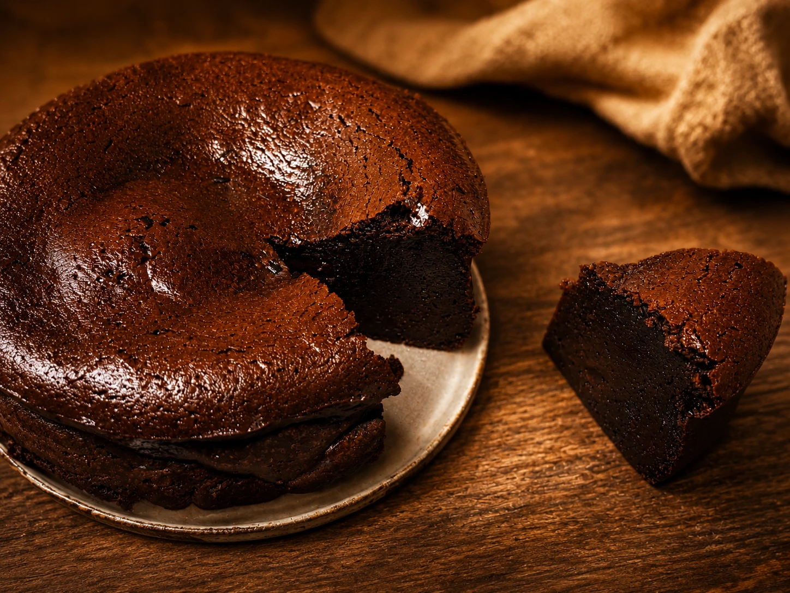

Dessert / Chocolate cake
まるで生チョコ
濃厚ガトーショコラ
チョコレートと純正生クリームで作る、しっとり濃厚なガトーショコラ。 焼き上げたあとにしっかり冷やすことで、まるで生チョコのようななめらかな口どけに仕上がります。

Steps
作り方
-
01
下準備をする 約5分
オーブンを180度に予熱します。 12cmの型にオーブンシートを敷き、薄力粉を使う場合はふるっておきます。 米粉を使う場合は、ふるわなくても大丈夫です。
-
02
生クリームを温める 約1分
純正生クリームを耐熱容器に入れ、電子レンジ500Wで30秒ほど温めます。 沸騰させず、チョコレートとなじみやすい温度にしておきます。
-
03
チョコレートと合わせる 約8分
チョコレートを湯煎でゆっくり溶かします。 溶けたチョコレートに温めた生クリームを加え、つやが出るまでやさしく混ぜ合わせます。
-
04
卵と砂糖を混ぜる 約5分
別のボウルで卵とグラニュー糖を混ぜます。 泡立てすぎず、砂糖がなじむようにやさしく混ぜると、しっとりした仕上がりになります。
-
05
粉を加えて濾す 約6分
チョコレートの生地に卵液を加えて混ぜ、薄力粉または米粉を加えます。 生地をざるで濾し、12cmの型に流し入れます。 お好みでブランデーを少量加えても香りよく仕上がります。
-
06
焼いて冷やす 約30分＋3時間
180度に予熱したオーブンで30分焼きます。 焼き上がったら少し上から型ごと落として焼き縮みを防ぎます。 粗熱が取れたら冷蔵庫で3時間ほど冷やし、しっかり落ち着かせてから切り分けます。
Story
このお菓子を作ったきっかけ
ガトーショコラは、材料が少ないぶん、チョコレートの溶かし方や混ぜ方、 焼いたあとの冷やし方で印象が大きく変わるお菓子です。 今回は、ふわっと軽いケーキというより、生チョコのように濃厚でなめらかな食感を目指しました。
ケーキ液をざるで濾すひと手間を加えることで、舌触りがぐっとなめらかになります。 焼きたてではなく、しっかり冷やしてから切り分ける時間も含めて楽しみたい一品です。